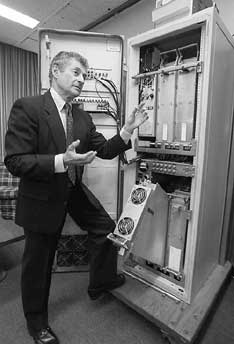
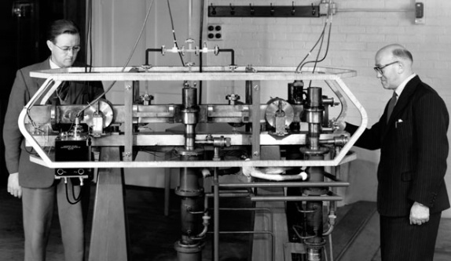
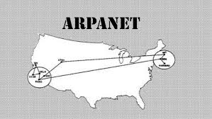

60-70's
1961
Leonard Kleinrock publicó desde el MIT el primer documento sobre la teoría de conmutación de paquetes
1964
Paul Baran, de Rand Corporation propuso la utilización de una red de conmutación de paquetes.

1968
Se puso en funcionamiento el NPL (National Physics Laboratory) en el Reino Unido.
1969
Se creó ARPANET, una red para comunicar los distintos centros implicados en el proyecto ARPA.
Los miembros de ARPANET fueron:
• Stanford Research Institute (SRI).
• Universidad de California, Santa Barbara.
• Universidad de California, Los Ángeles (UCLA).
• Universidad de Utah.
1973
Primera conexión internacional con Inglaterra y Noruega.